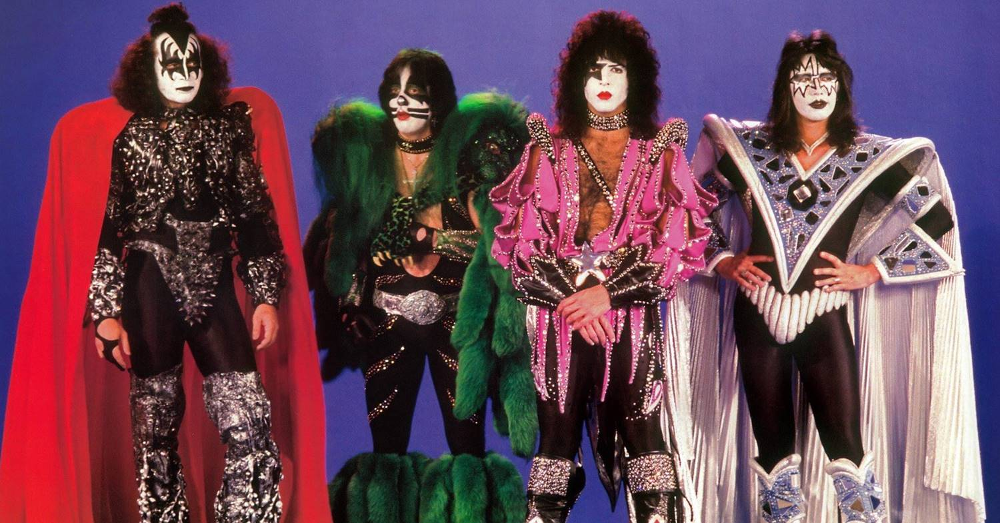
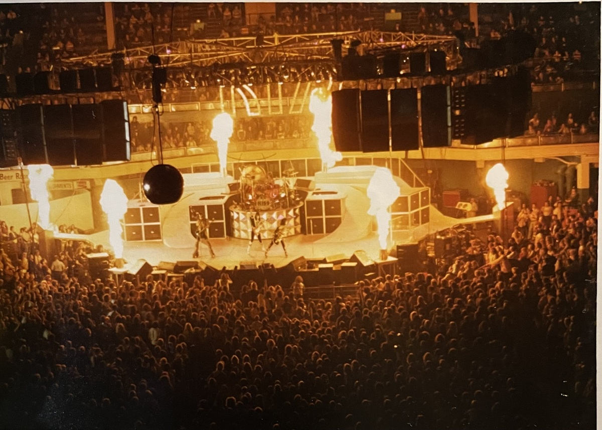
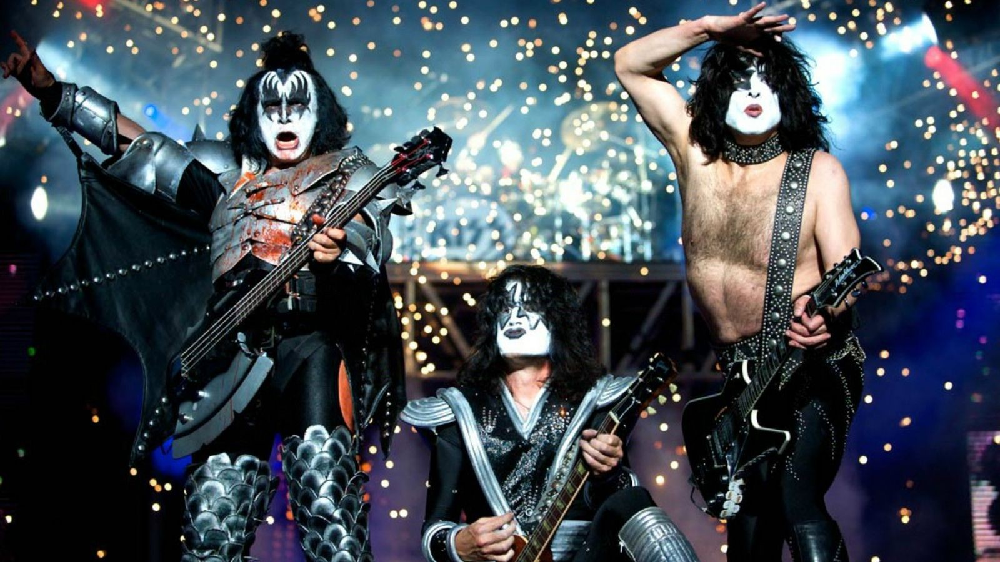
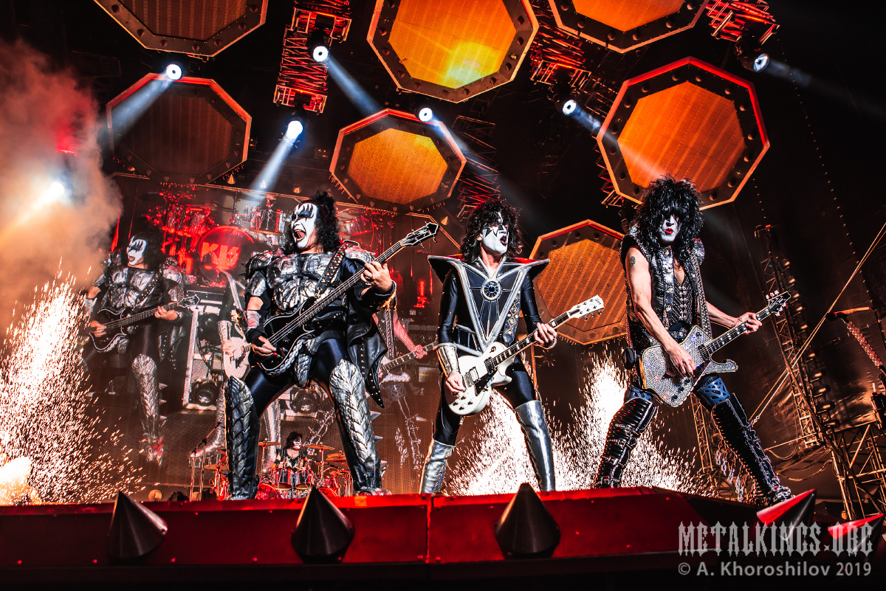
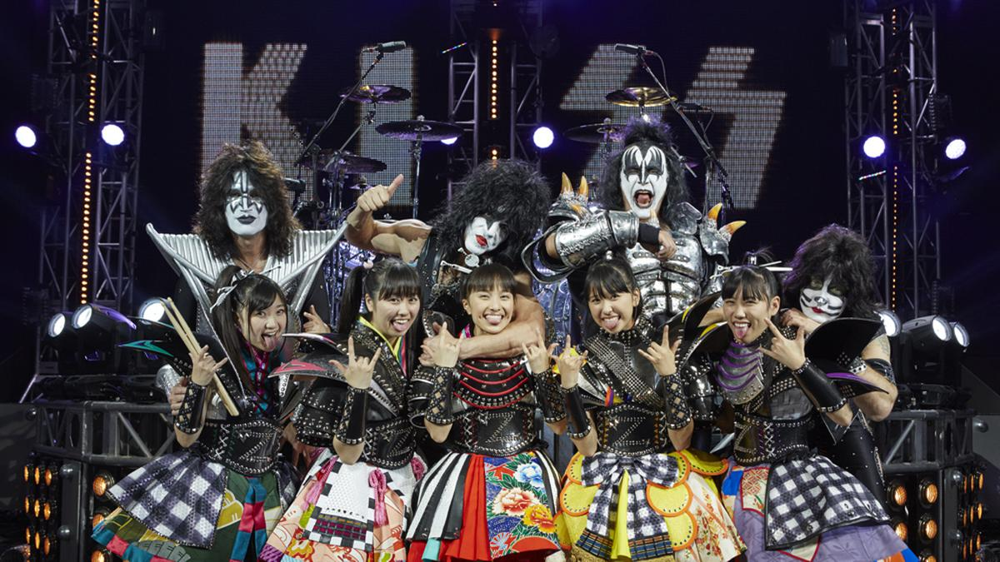

Рождение легенды
История группы Kiss началась в Нью-Йорке в 1973 году, когда Джин Симмонс (Gene Simmons) и Пол Стэнли (Paul Stanley) решили создать группу, которая отличалась бы не только музыкой, но и ярким сценическим образом. К ним присоединились Питер Крисс (Peter Criss) и Эйс Фрейли (Ace Frehley), и вместе они сформировали коллектив, который быстро стал известен благодаря своей музыке и экстравагантным шоу.
Визуальный стиль
Kiss сразу выделялись на фоне других групп благодаря своим уникальным образам. Чёрно-белый макияж, яркие костюмы и высокие платформы стали их фирменным знаком. Каждый участник группы создал свой сценический образ: Демон (Симмонс), Старчайлд (Стэнли), Космический человек (Фрейли) и Кэтмен (Крисс).
Энергетика живых выступлений
Шоу Kiss — это не просто концерты, это настоящее пиршество для глаз. Пиротехника, огненное дыхание, кровь, "плюющаяся" изо рта Симмонса, и акробатические номера сделали их выступления невероятно зрелищными и привлекли миллионы поклонников по всему миру.
Музыкальные награды и номинации
Выступления KISS
KISS в Милане, Италия, 2008 год. Фотограф Дэнис О'Риган
KISS в Москве, ВТБ Арена — Центральный стадион "Динамо", 2019 год
KISS с группой Momoiro Clover Z в Токио, 2015 год
